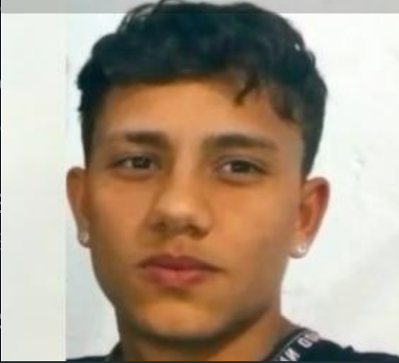
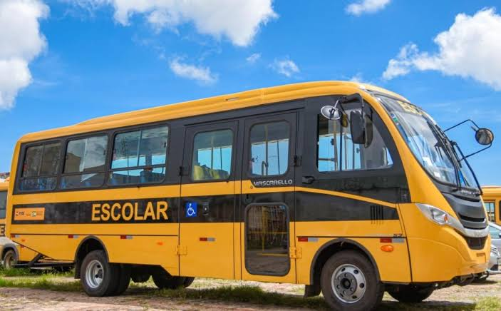

A prefeitura de Ibititá dispõe de dois ônibus para a locomoção dos alunos até o IFBA - Campus Irecê. Um para cobrir o período matutino e noturno, enquanto o segundo veículo da frota fica disposto aos alunos do período vespertino. Em qualquer dos horários a partida para Irecê inicia no Posto Larco, Rua Viêra Matos, Ibititá-BA, em direção ao campus.
Um dos ícones que você pode encontrar no ônibus pela manhã, é Zé o estourado de Ibititá, cuidado para não cair em seus encantos ;) 

Horários
Matutino:
6:20h Saída do local de partida
12:05h Saída da portaria IFBA.
Vespertino:
18:05h Saída da portaria IFBA